Connection to raspiberry¶
首先我们安装[Xshell软件](https://www.waveshare.net/w/upload/3/3b/Xshell-6.0.7z)，安装步骤如下：
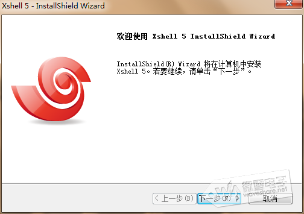
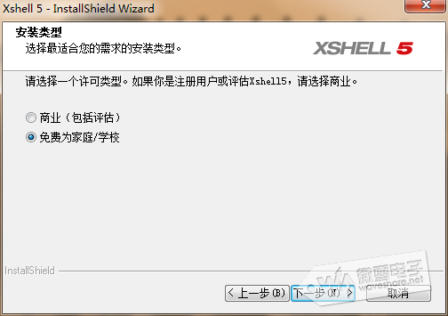
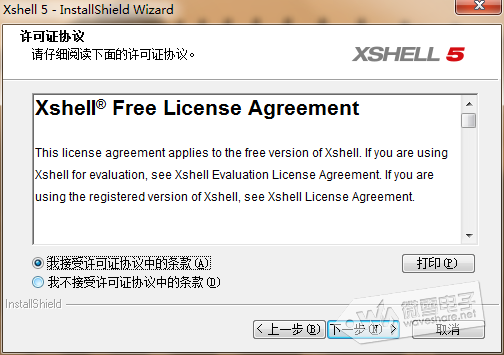
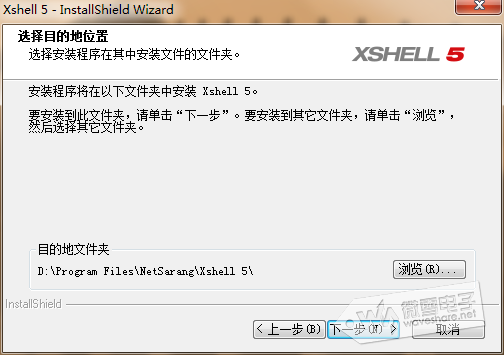
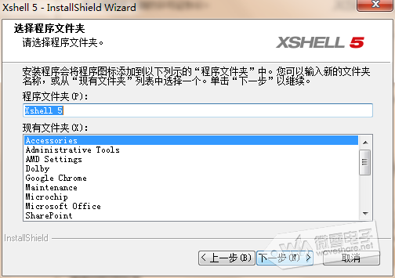
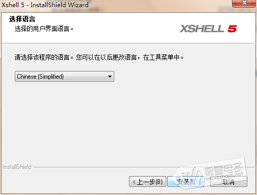
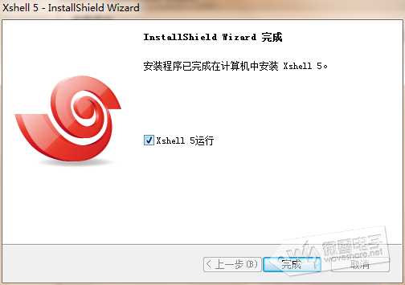
接着把树莓派接入网络，然后上电。可以借助IP扫描软件或者路由器搜索到树莓派获取到的IP地址，如下：
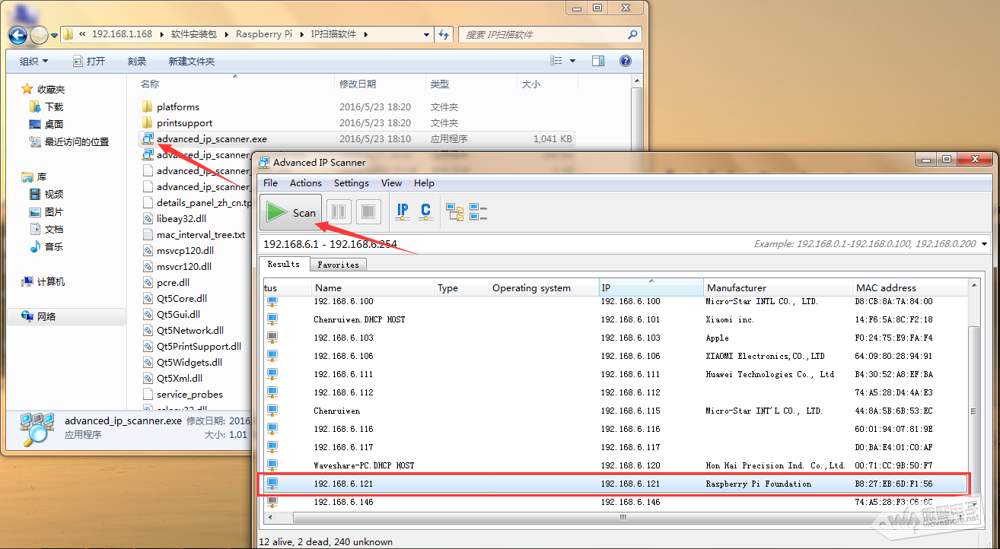
说明：如果烧写的是2016年11月后的Raspbian系统，默认是没开启SSH服务器的，你需要手头开启它。开启的方法有2种（推荐用2的，操作简单）：
方法1、进到raspi-config，选择Interfacing options，选择ssh，点击Enter，然后选择 Enable or disable ssh server
方法2、在烧写好镜像的sd卡根目录下新建一个命名为“ssh”的文件，保存即可。(见下图)
（相关内容详见：https://www.raspberrypi.org/documentation/remote-access/ssh/）

通过ssh登录树莓派
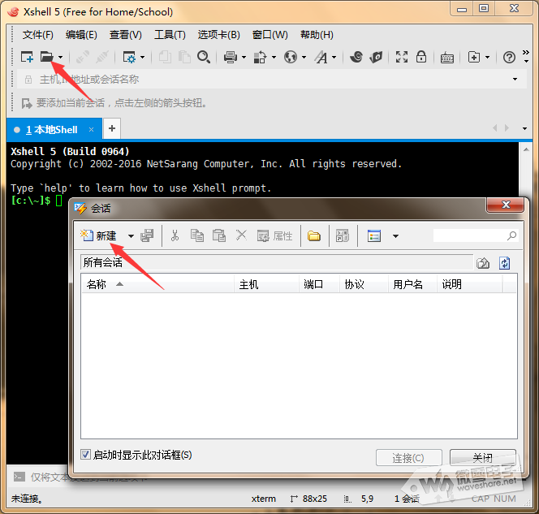
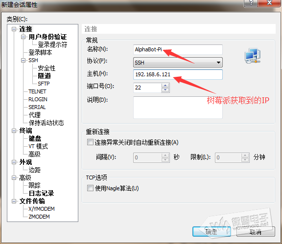
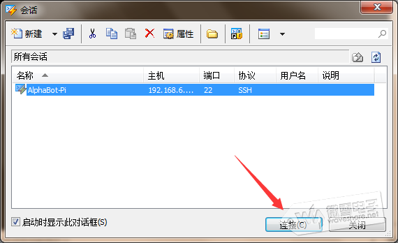
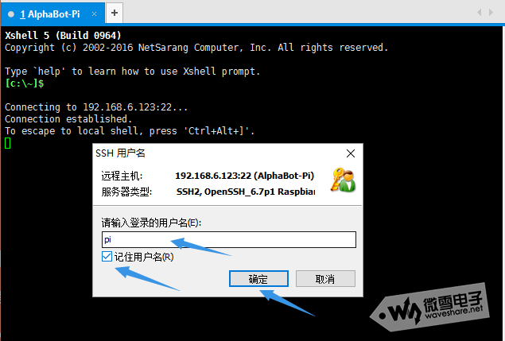
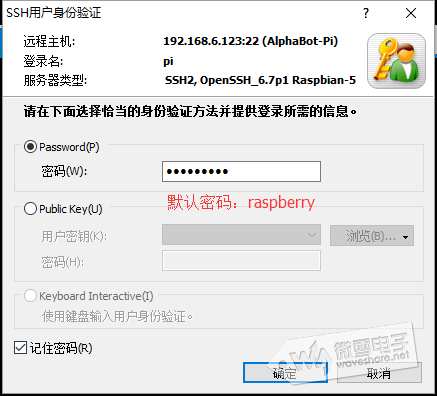
连接成功后，可以看到树莓派命令行界面：
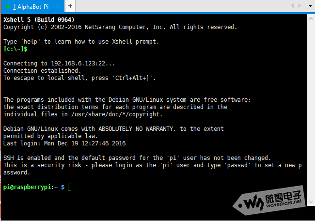